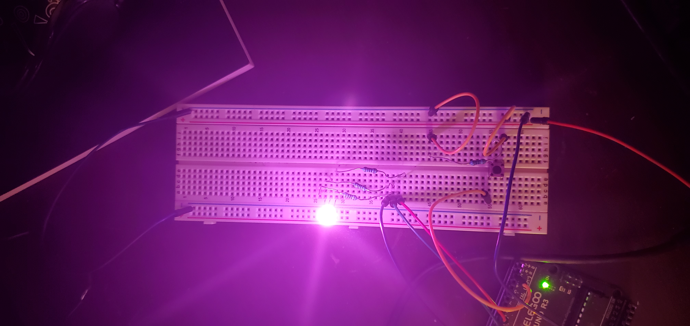

Web-based LED Color Setter

Schematic

Sketch.js Code
var serial; // variable to hold an instance of the serialport library
var portName = 'COM6' //rename to the name of your port
var datain; //some data coming in over serial!
let redInput; //color inputs
let greenInput;
let blueInput;
let button;
let c;
function setup() {
serial = new p5.SerialPort(); // make a new instance of the serialport library
serial.on('list', printList); // set a callback function for the serialport list event
serial.on('connected', serverConnected); // callback for connecting to the server
serial.on('open', portOpen); // callback for the port opening
serial.on('data', serialEvent); // callback for when new data arrives
serial.on('error', serialError); // callback for errors
serial.on('close', portClose); // callback for the port closing
serial.list(); // list the serial ports
serial.open(portName); // open a serial port
createCanvas(1200, 800);
background(0x08, 0x16, 0x40);
redInput = createInput(); //creating inputs per LED color
redInput.position(100,350);
redInput.id('rin');
blueInput = createInput();
blueInput.position(900 ,350);
blueInput.id('bin');
greenInput = createInput();
greenInput.position(500,350);
greenInput.id('gin')
button = createButton('submit');
button.position(550, 450);
button.id('sub');
let x = document.getElementById('sub');
print(x);
console.log(x);
x.addEventListener("click", writeColor);
print(x);
console.log(x);
}
// get the list of ports:
function printList(portList) {
// portList is an array of serial port names
for (var i = 0; i < portList.length; i++) {
// Display the list the console:
print(i + " " + portList[i]);
}
}
function serverConnected() {
print('connected to server.');
}
function portOpen() {
print('the serial port opened.')
}
function serialError(err) {
print('Something went wrong with the serial port. ' + err);
}
function portClose() {
print('The serial port closed.');
}
function serialEvent() {
if (serial.available()) {
datain = Number(serial.readLine());
// console.log(datain);
}
}
function draw() {
background(0);
fill(255);
textSize(48);
text('Set the color of your RGB LED!', 250, 80)
textSize(24)
text('The values must contain all three digits i.e 000, 024, 124 etc', 275, 150)
text('Red:', 150, 300);
text('Green:', 550, 300);
text('Blue:', 950, 300);
if (serial.available()) { // checking to see if the LED is connected, informing user
text("LED Connected", 500,225);
} else {
text("Can't find your LED :(", 500,225);
}
}
function writeColor() {
console.log('pressed')
if (serial.available()) {
console.log('wrote')
let rVal = redInput.value(); //reading in user values
let gVal = greenInput.value();
let bVal = blueInput.value();
let r1 = rVal % 10; //converting them into single digits to write to serial.
let r2 = Math.floor(rVal/10) % 10;
let r3 = Math.floor(rVal / 100);
let b1 = bVal % 10;
let b2 = Math.floor(bVal/10) % 10;
let b3 = Math.floor(bVal / 100);
let g1 = gVal % 10;
let g2 = Math.floor(gVal/10) % 10;
let g3 = Math.floor(gVal / 100);
serial.write(r3);
serial.write(r2);
serial.write(r1);
serial.write(g3);
serial.write(g2);
serial.write(g1);
serial.write(b3);
serial.write(b2);
serial.write(b1);
console.log([r3, r2, r1])
console.log([g3, g2, g1])
console.log([b3, b2, b1])
//c = color((r3 * 100) + (r2 * 10) + r1, (g3 * 100) + (g2 * 10) + g1, (b3 * 100) + (b2 * 10) + b1);
}
}
Arduino Code
//modified from Debounce code @ http://www.arduino.cc/en/Tutorial/Debounce
// constants won't change. They're used here to set pin numbers:
const int buttonPin = 2; // the number of the pushbutton pin
const int red = 9; // the number of the red LED pin
const int green = 10; // the number of the green LED pin
const int blue = 11; // the number of the blue LED pin
// Variables will change:
int buttonState = LOW; // the current reading from the input pin
int lastButtonState = LOW; // the previous reading from the input pin
int ledState = LOW; // the current state of the output pin
int redVal = 255; //initial red value for LED
int greenVal = 200; // initial green value for LED
int blueVal = 100; // initial blue value for LED
// the following variables are unsigned longs because the time, measured in
// milliseconds, will quickly become a bigger number than can be stored in an int.
unsigned long lastDebounceTime = 0; // the last time the output pin was toggled
unsigned long debounceDelay = 50; // the debounce time; increase if the output flickers
void setup() {
Serial.begin(9600);
Serial.setTimeout(10);
pinMode(buttonPin, INPUT);
pinMode(red, OUTPUT);
pinMode(green, OUTPUT);
pinMode(blue, OUTPUT);
}
void loop() {
// read the state of the switch into a local variable:
int reading = digitalRead(buttonPin);
//delay in between reads for stability
// check to see if you just pressed the button
// (i.e. the input went from LOW to HIGH), and you've waited long enough
// since the last press to ignore any noise:
// If the switch changed, due to noise or pressing:
if (reading != lastButtonState) {
// reset the debouncing timer
lastDebounceTime = millis();
}
if ((millis() - lastDebounceTime) > debounceDelay) {
// whatever the reading is at, it's been there for longer than the debounce
// delay, so take it as the actual current state:
// if the button state has changed:
if (reading != buttonState) {
buttonState = reading;
// only toggle the LED if the new button state is HIGH
if (buttonState == HIGH) {
ledState = !ledState;
}
}
}
// set the LED:
if (ledState == HIGH) {
set(redVal, greenVal, blueVal);
if (Serial.available() > 0) {
int r1 = Serial.read();//read in first byte for red led
int r2 = Serial.read();//read in second byte for red led
int r3 = Serial.read();// red in third byte for red led
int g1 = Serial.read();//repeated for each color
int g2 = Serial.read();
int g3 = Serial.read();
int b1 = Serial.read();
int b2 = Serial.read();
int b3 = Serial.read();
Serial.print("received ");
Serial.print("Red ");
Serial.print(r1);
Serial.print(r2);
Serial.println(r3);
Serial.print("Green ");
Serial.print(g1);
Serial.print(g2);
Serial.println(g3);
Serial.print("Blue");
Serial.print(b1);
Serial.print(b2);
Serial.println(b3);
delay(1000);
int rNum = r3 + (r2 * 10) + (r1 * 100); // compute the redVal based in serial input
int gNum = g3 + (g2 * 10) + (g1 * 100);// repeated for other colors
int bNum = b3 + (b2 * 10) + (b1 * 100);
set(rNum, gNum, bNum);
}
} else {
off();
}
Serial.println(ledState);
delay(10);
// save the reading. Next time through the loop, it'll be the lastButtonState:
lastButtonState = reading;
}
void set (int r, int g, int b ) {
redVal = r;//computed red val
greenVal = g; //computed green val
blueVal = b;//computed blue val
analogWrite(red, redVal);
Serial.print("redVal set to ");
Serial.println(redVal);
analogWrite(green, greenVal );
Serial.print("greenVal set to ");
Serial.println(greenVal);
analogWrite(blue, blueVal);
Serial.print("blueVal set to ");
Serial.println(blueVal);
}
void off () {
analogWrite(red, 0);
analogWrite(green, 0);
analogWrite(blue, 0);
}
Result